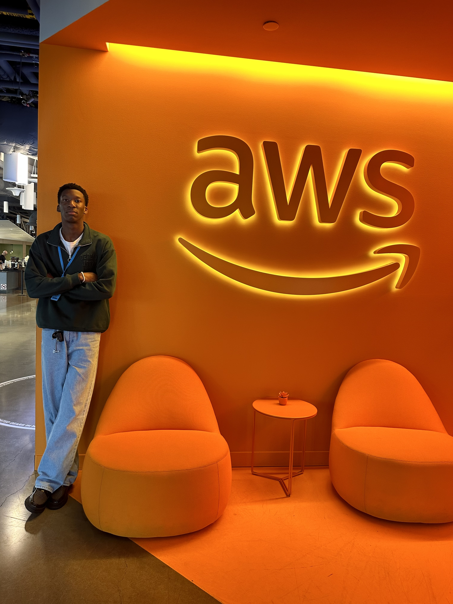

Introduction
Currently at Clarkson University studying for a Bachelor's degree in Computer Science and Mathematics with plans to graduate in May 2025 is Kolade Ayeni who aspires to leave a mark in the technology sector as a first-generation college attendee. He is passionate about making notable contributions to groundbreaking software development while pushing forward the realms of machine learning and data analysis.

Background and Education
Kolade grew up in a household that valued diligence and learning from an early age. This ignited his interest in Computer Science, fueled by a fascination with technology’s inner workings and its potential to tackle intricate challenges head-on. His enthusiasm steered him towards pursuing a degree in Computer Science, where he has thrived academically by delving into key areas like Algorithms & Data Structures, Operating Systems, and honing skills in Software Design and currently, Front-End Web Development.
Professional Experience
Kolade's experience in internships at prestigious companies such as Amazon Web Services and contributions to biometrics research at Clarkson University have significantly strengthened his skills in software engineering. He has created scalable solutions for managing resources better and enhancing system performance while decreasing latency, resulting in a 30% improvement in system performance. Additionally, Kolade's efforts in preprocessing data have boosted throughput by 50% through innovative algorithm design.
Future Goals
Kolade aims to blend his academic expertise with practical work experience to embark on a path in software engineering, focusing on cloud computing and machine learning. His post-graduation aspirations involve contributing to innovative projects that advance technology and develop software to enhance people's lives.
Leadership and Community Engagement
Kolade is deeply committed to leadership and community engagement, as evidenced by his role as the president of the National Society of Black Engineers (NSBE) at Clarkson University. His exceptional leadership skills and unwavering dedication have earned him accolades such as the Black Excellence Award and membership in Clarkson’s esteemed PHALANX Honor Society.